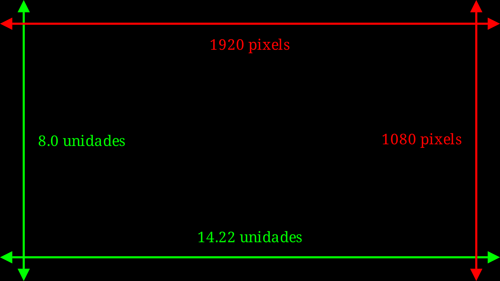
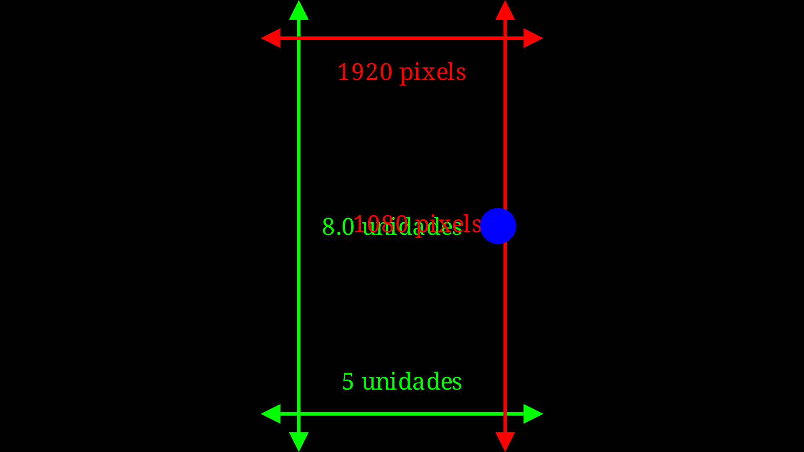
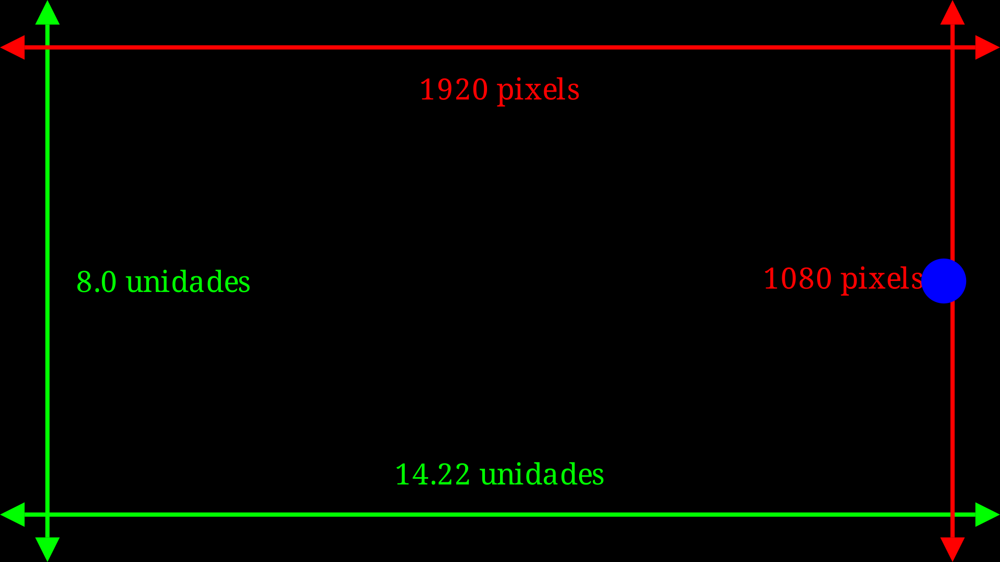
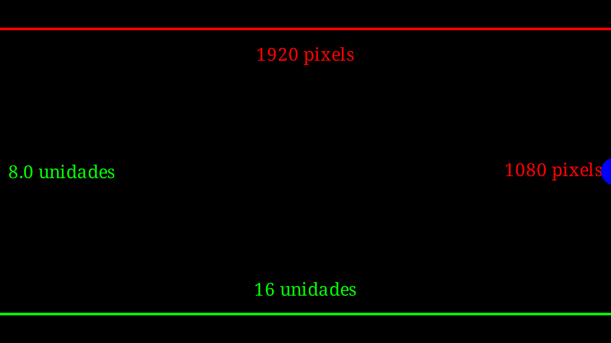
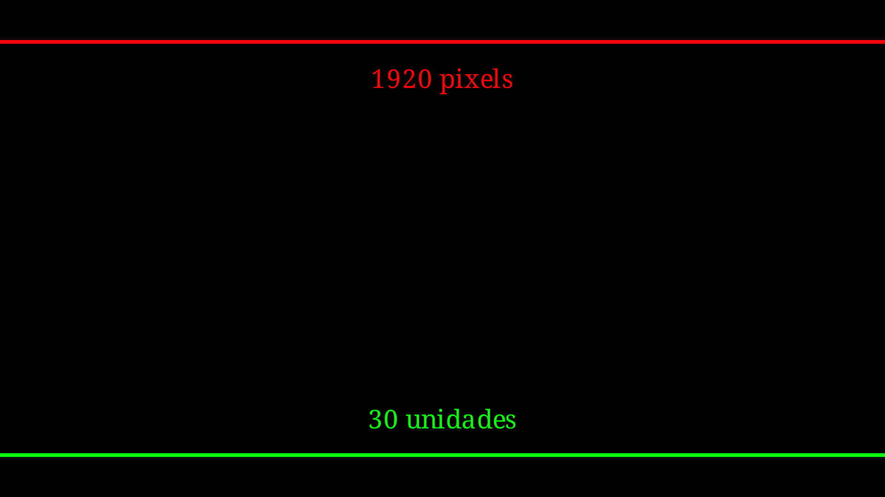
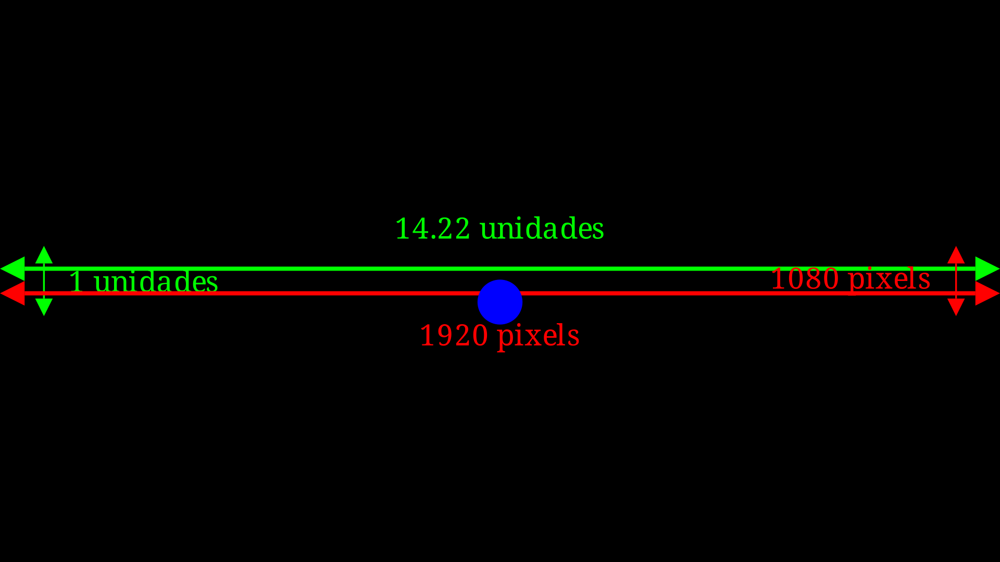
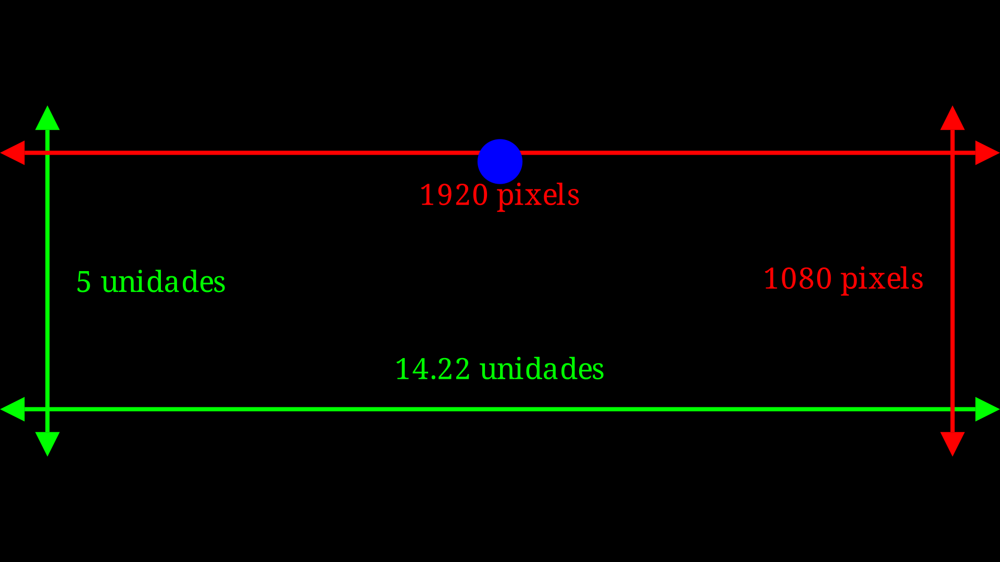
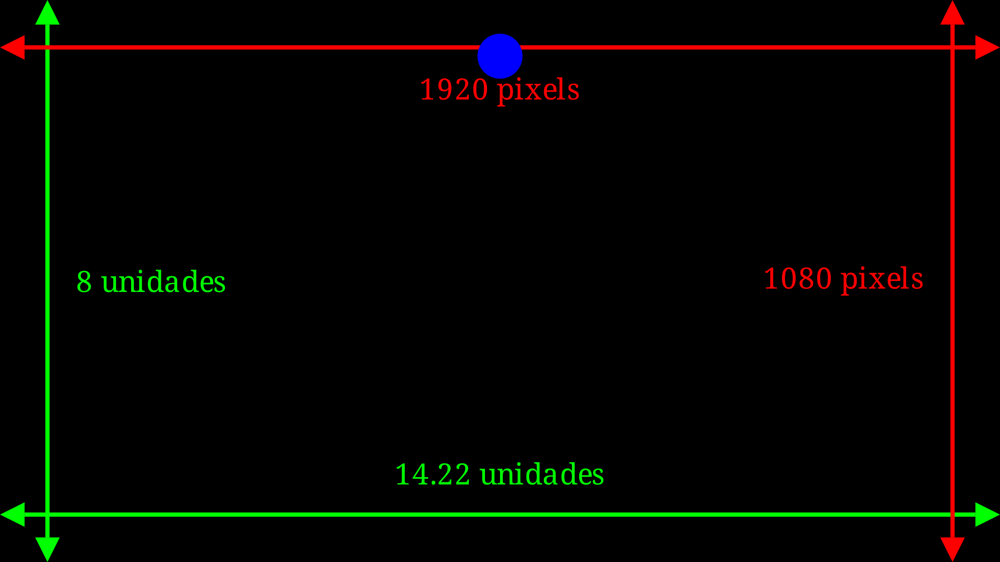
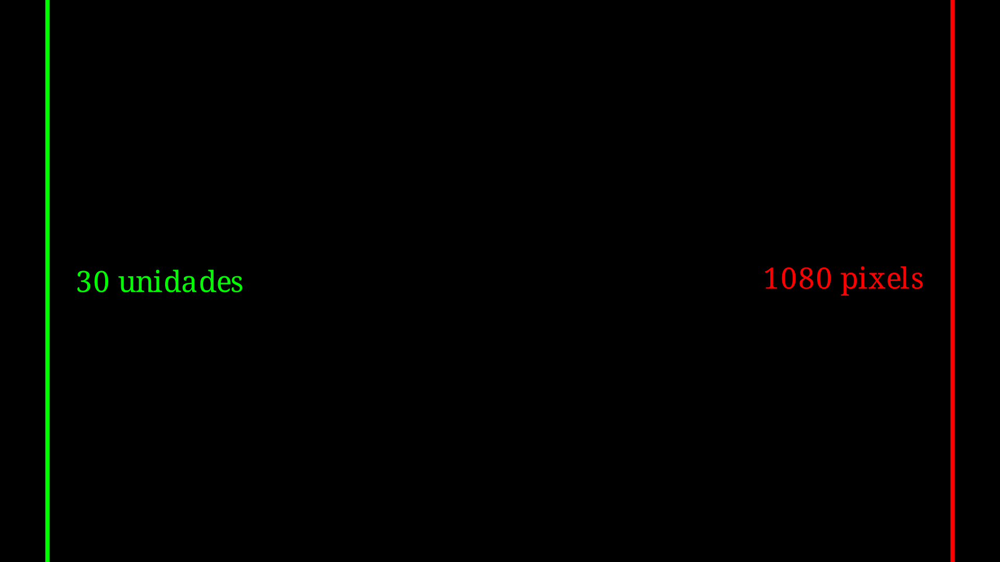

from manim import *
class CameraDimension(Scene):
def construct(self):
def frame_annotation(framew, frameh, pixelw, pixelh):
marca_unid_x = DoubleArrow(framew * LEFT / 2, framew * RIGHT / 2, buff=0).to_edge(DOWN)
marca_unid_y = DoubleArrow(frameh * UP / 2, frameh * DOWN / 2, buff=0).to_edge(LEFT)
marca_px_x = DoubleArrow(framew * LEFT / 2, framew * RIGHT / 2, buff=0).to_edge(UP)
marca_px_y = DoubleArrow(frameh * UP / 2, frameh * DOWN / 2, buff=0).to_edge(RIGHT)
txt_unid_x = Text(str(framew)[:5] + " unidades", font_size=30).next_to(marca_unid_x, UP)
txt_unid_y = Text(str(frameh) + " unidades", font_size=30).next_to(marca_unid_y, RIGHT)
txt_px_x = Text(str(pixelw) + " pixels", font_size=30).next_to(marca_px_x, DOWN)
txt_px_y = Text(str(pixelh) + " pixels", font_size=30).next_to(marca_px_y, LEFT)
unidades = Group(marca_unid_x,marca_unid_y,txt_unid_x,txt_unid_y).set_color(PURE_GREEN)
pixels = Group(marca_px_x,marca_px_y,txt_px_x,txt_px_y).set_color(PURE_RED)
return (unidades,pixels)
dimensao = frame_annotation(config.frame_width, config.frame_height,
config.pixel_width, config.pixel_height)
self.add(*dimensao)4 Câmera
Por padrão, a câmera é definida com uma relação de pixel 16:9, dessa forma as dimensões são, aproximadamente: 8.0 unidades de altura e 14.222 unidades de largura. As dimensões da câmera são independentes da resolução de renderização (480p, 720p, etc.) estipuladas pelo usuário, portanto, não há necessidade de se preocupar com isso.

Dica
As resoluções comuns para 16:9 estão listadas em 16:9 aspect ratio.
4.1 Alterando a largura e a altura
O método config.frame_width permite definir outros valores para a largura da câmera.
Exemplo 4.1 Alguns exemplos modificando o valor da largura. Nos exemplos será utilizado um círculo como referência das alterações nas dimensões.

config.frame_width=5.

config.frame_width=14.222222222222221.

config.frame_width=16.

config.frame_width=30.
O método config.frame_height permite definir outros valores para a altura da câmera.
Exemplo 4.2 Alguns exemplos modificando o valor da altura. Nos exemplos será utilizado um círculo como referência das alterações nas dimensões.

config.frame_height=1.

config.frame_height=5.

config.frame_height=8.

config.frame_height=30.
4.2 Cenas da câmera
Em todos os exemplos apresentados até agora, utilizamos um tipo de cena chamado Scene, que é o tipo básico para realizar animações. Agora, vamos explorar os tipos de cenas mais utilizados no manim.
4.2.1 moving_camera_scene
Uma cena com configurações e propriedades especiais que a tornam adequada para casos em que a câmera deve ser movimentada.


4.2.2 scene
Tela básica para animações.

4.2.3 three_d_scene
Uma cena adequada para renderizar objetos e animações tridimensionais.


4.2.4 zoomed_scene
Esta é uma cena com configurações especiais feitas para quando uma determinada parte da cena precisa ser ampliada e exibida separadamente.
4.3 Cenas da câmera
Exercícios sugeridos
Exercicio 1
Exercicio 2
Exercicio 3.